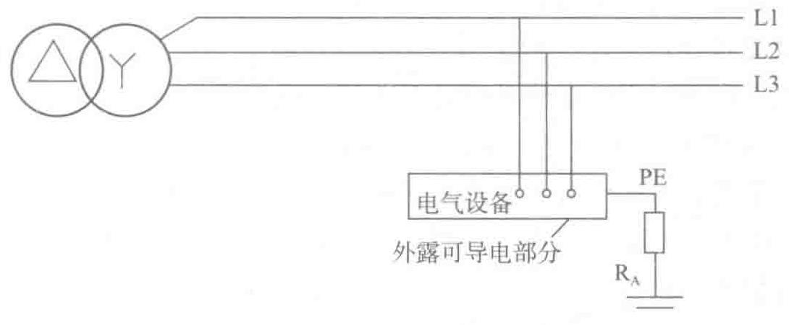

路阻抗较TN系统的故障阻抗大，故障电流相对较小。在大多数情况下其故障点不易熔焊，故障点阻抗难以确定，故障回路阻抗也因此难以在设计时确定。就防电击而言，重要的是保护接地的接地电阻RA和自接地极引至电气装置外露导电部分一段PE线上的电压降，因为它是施加于人体的预期接触电压。在一般干燥场所，此电压超过接触电压限值50V时，防护电器必须及时切断电源以防止电击事故的发生。
为满足预期接触电压超过50V时防护电器能及时切断电源的要求，故障电流Id应大于防护电器在规定时间内切断电源的可靠动作电流，即
Id=50V/RA≥Ia
或
RAIa≤50V
式中：RA——接地极电阻和自接地极接至外露导电部分的PE线电阻之和（Ω）；
Ia——使保护电器在规定时间内可靠动作的电流（A），当采用RCD时，Ia为RCD的额定动作电流I△n。
切断电源的规定时间对于固定式设备和配电线路来说为5s，在干燥环境内对于手持式和移动式设备来说为表2-14所示的值。
| 预期接触电压/V | 50 | 75 | 90 | 110 | 150 | 220 |
|---|---|---|---|---|---|---|
| 切断电源最大时间/s | 5 | 0.60 | 0.45 | 0.36 | 2.27 | 0.18 |
（3）IT系统
1）IT系统的定义
IT系统的电源不接地或通过阻抗接地，电气设备的外壳直接接地或通过保护线接至单独接地体，如图2-21所示。

2）IT系统防电击自动切断电源的条件
IT系统没有必要在发生第一次接地故障时就切断电源，因为IT系统在电源端不作系统接地或经高阻抗接地。当系统内发生第一次接地故障时，故障电流没有直接返回电源的通